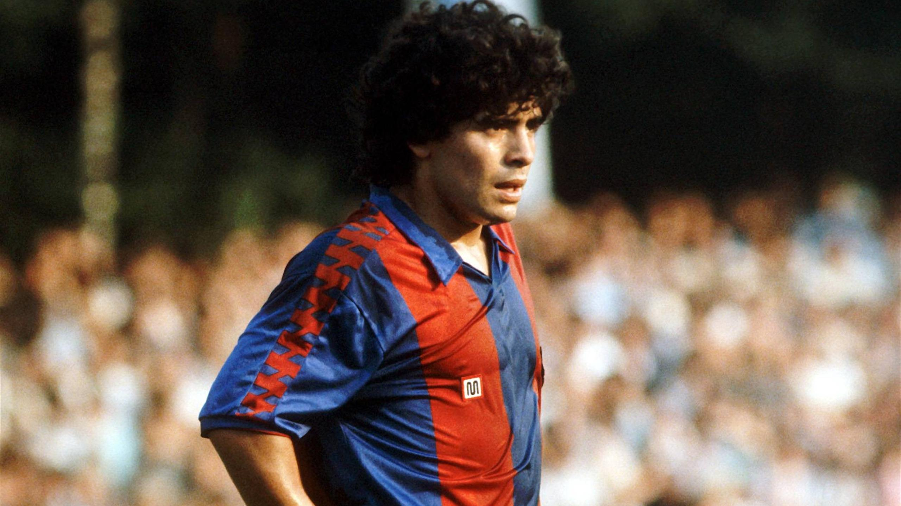
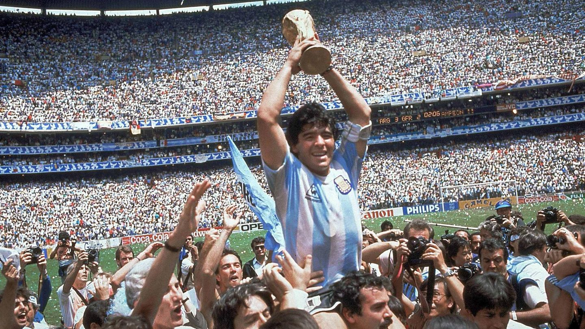

1. Maradona sur le plan sportif : un génie incomparé
Les débuts prometteurs et l’ascension
Diego Armando Maradona est né le 30 octobre 1960 à Villa Fiorito, un quartier pauvre de Buenos Aires. Dès son plus jeune âge, il montre des aptitudes extraordinaires avec le ballon. À l'âge de 10 ans, il rejoint Los Cebollitas, une équipe junior affiliée à Argentinos Juniors. Sa maîtrise technique est stupéfiante : il est capable de dribbler avec une précision inouïe et affiche déjà une vision du jeu incroyable pour un si jeune âge. Ses performances attirent l'attention des recruteurs, et à 15 ans, il fait ses débuts en première division argentine avec Argentinos Juniors.
En cinq saisons au club, Maradona marque 116 buts en 167 matchs, devenant rapidement une star nationale. En 1981, il signe avec Boca Juniors, l'un des plus grands clubs d'Argentine. Lors de sa première saison, il mène l’équipe à la victoire en championnat, devenant une idole pour les supporters.
Le rêve européen et l'épreuve espagnole
Après son succès en Argentine, Maradona quitte son pays pour rejoindre l'Europe. En 1982, il signe un contrat avec le FC Barcelone pour une somme record à l'époque. Cependant, son passage en Espagne est marqué par des hauts et des bas. Bien qu’il remporte des titres comme la Coupe du Roi en 1983, il subit une blessure grave après une agression du défenseur Andoni Goikoetxea, surnommé "le boucher de Bilbao". Cette blessure, une fracture de la cheville, met en pause sa carrière pendant plusieurs mois.
De plus, Maradona ne s'entend pas avec les dirigeants du Barça, et ses problèmes disciplinaires commencent à émerger, notamment après une bagarre lors d’un match contre l’Athletic Bilbao en 1984, qui met fin à son aventure à Barcelone.
Le sommet de sa carrière au Napoli
En 1984, Maradona signe au SSC Napoli pour une autre somme record. Naples, une ville pauvre en proie à des difficultés économiques et sociales, voit en Maradona un sauveur. Le joueur va transformer le club et la ville.
Sous ses ordres, le Napoli remporte son premier Scudetto en 1987, marquant un tournant historique pour le football italien. En 1989, Maradona mène également le club à la victoire en Coupe UEFA, un autre titre majeur. Naples devient une ville entièrement dévouée à Maradona. Son image est placardée partout, et il est traité comme une divinité.
Maradona, pendant ses années au Napoli, est au sommet de sa carrière. Son style de jeu est inimitable : une conduite de balle prodigieuse, une capacité à marquer et à créer des opportunités pour ses coéquipiers, et une résistance mentale qui fait de lui un leader né. Il offre également au Napoli un second titre de Serie A en 1990, renforçant encore son statut de légende vivante.
La Coupe du Monde 1986 : un triomphe immortel
Cependant, c’est lors de la Coupe du Monde 1986, au Mexique, que Maradona entre dans l’histoire à tout jamais. En tant que capitaine de l’équipe d’Argentine, il mène son équipe à la victoire finale, et son influence sur ce tournoi est totale.
Le quart de finale contre l'Angleterre est probablement le match le plus célèbre de sa carrière. Il marque deux des buts les plus iconiques de l'histoire du football dans ce match. Le premier, surnommé "la Main de Dieu", est un but controversé, marqué de la main mais validé par l’arbitre. Le second, connu comme le "But du Siècle", est un chef-d'œuvre de technique : Maradona dribble six joueurs anglais sur plus de 60 mètres avant de marquer.
En finale, l’Argentine bat l’Allemagne de l’Ouest 3-2, et Maradona est élu meilleur joueur du tournoi, cimentant son statut de légende.
Le déclin et les suspensions
Après les sommets atteints au Napoli et lors de la Coupe du Monde 1986, Maradona commence à souffrir de son style de vie. En 1991, il est contrôlé positif à la cocaïne, ce qui lui vaut une suspension de 15 mois. Cet incident marque le début du déclin de sa carrière.
Lors de la Coupe du Monde 1994 aux États-Unis, Maradona fait un retour spectaculaire, mais il est testé positif à l'éphédrine après deux matchs. Il est exclu du tournoi, et l’Argentine, privée de son leader, est éliminée prématurément. Cet événement signe la fin de sa carrière internationale.